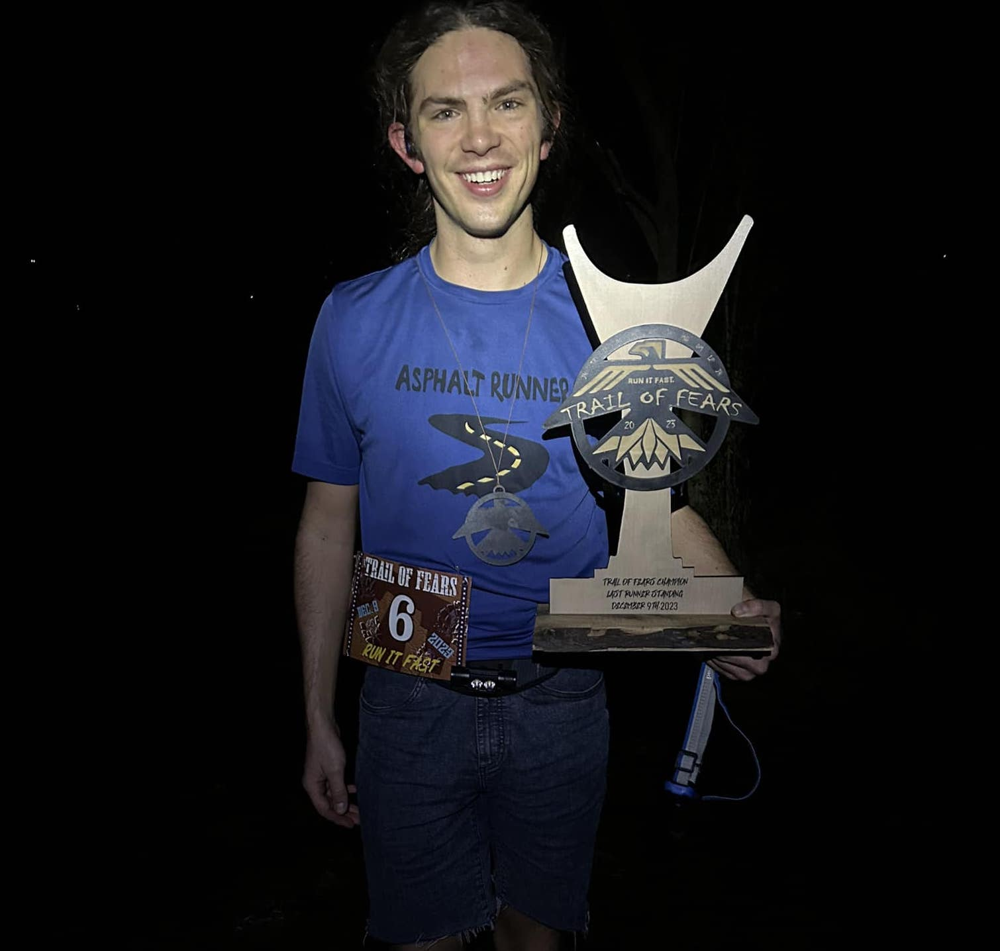
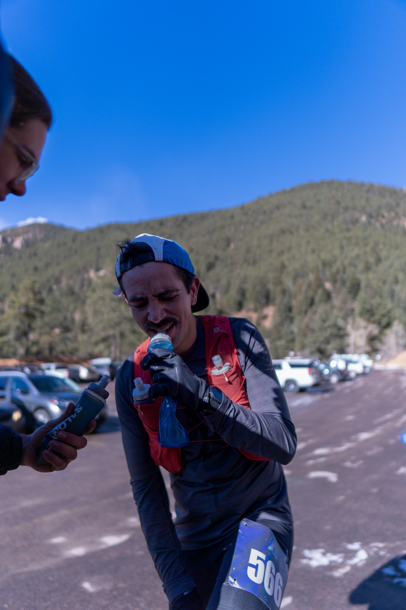
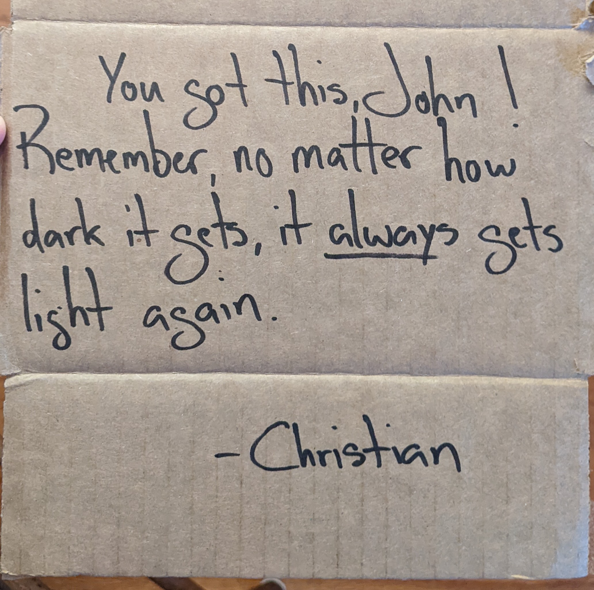
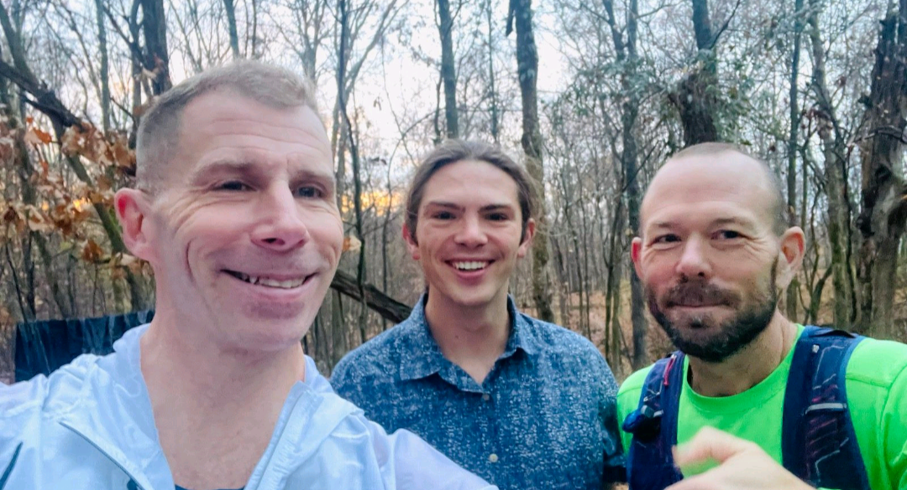
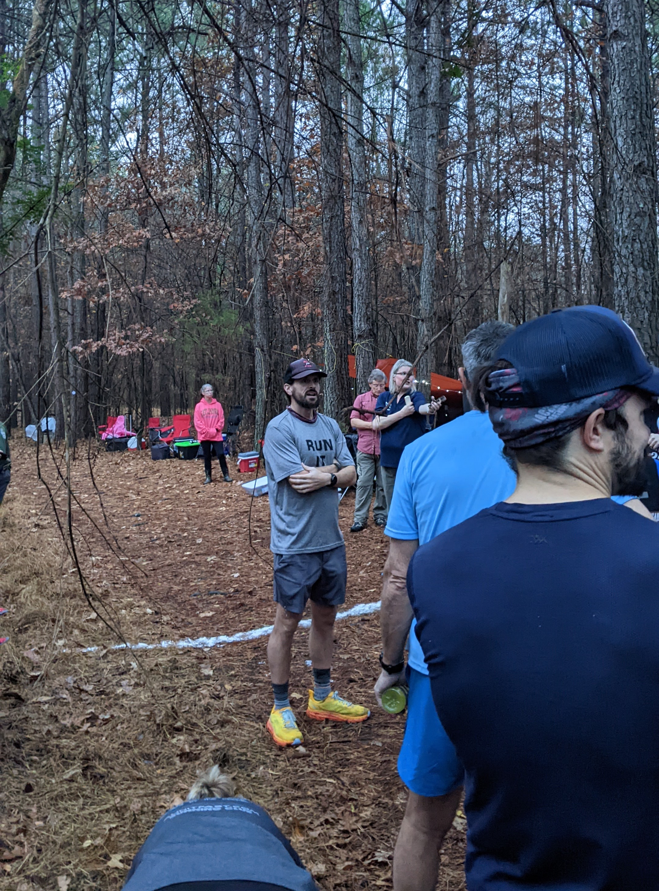
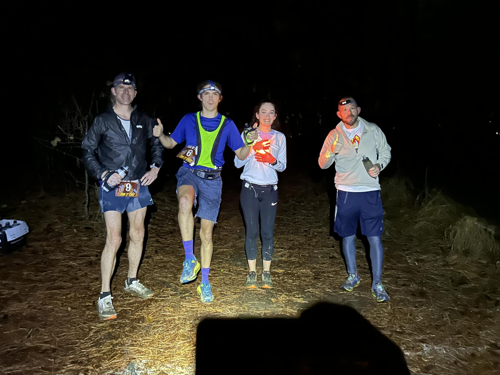
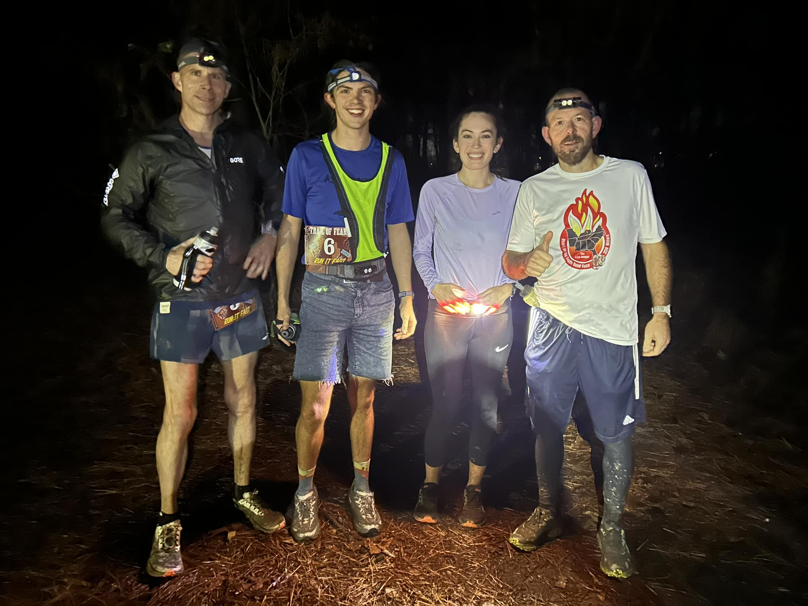
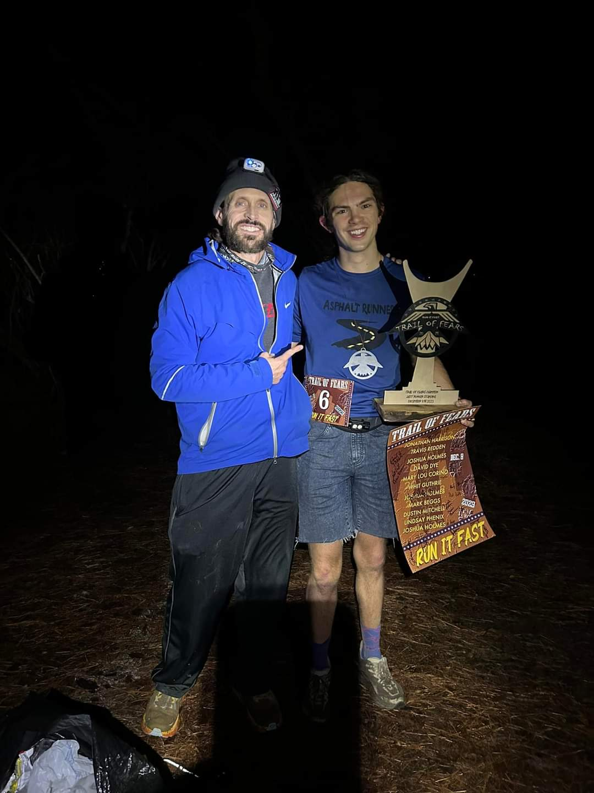
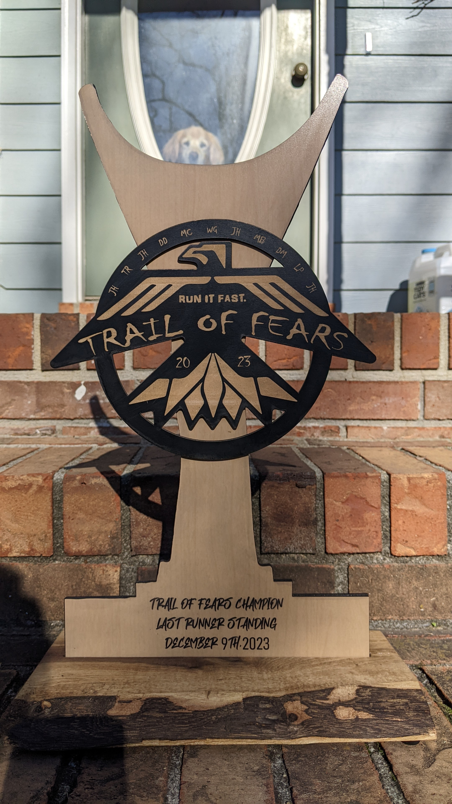

Trail of Fears 2023 race report
Summary
On Dec 9, I ran the Trail of Fears (ToF) backyard ultramarathon. In short, this was the best-executed run of my life. I showed up in the right mindset, did exactly what I needed to in order to have a good race.
That resulted in a win, with 95 miles, and I still felt relatively fresh and excited at the end. I never felt bad, other than the 5 miles following an ankle roll at mile 85, which were some of the most physically excruciating miles of my life, but I knew how to keep doing my job, and the ankle pain got better.
This race is really special to me, as it has a one-of-a-kind community and was my first ultra back in 2015, so being able to execute this so close to home means a lot. When I showed up that first time, I called everybody “Mr.” and “Ms.”, and now they’ve been my friends for years.
While the win is cool, it’s not the most meaningful part. I’ve spent the past 8 years working through some deep physical and emotional highs and lows. I spent cumulative years injured, unsure I’d ever run more than 25 miles/week again, and unable to trust my body. This was a celebration of so much growth through failure, from being the 16-year-old kid from a small town who showed up in 2015 to now having an almost-developed prefrontal cortex and sometimes being able to hang with the big dogs.
It’s hard to describe how much support I’ve felt over the years (in and outside of this race). I try to do so here, but I definitely don’t capture it all. I just hope that I can be the same sort of light for the people around me that they’ve been for me.

The race
History
Trail of Fears is the longest continuously running backyard ultra in the world. As I understand the lore, Joshua Holmes (aka Josh, the race director) is good friends with Laz (who started the backyard format), and Josh started this race in his hometown (Jackson, TN) shortly after Laz’s silly “invention”. Laz didn’t hold his backyard ultra one year, so Josh has snagged the title of “longest continuously running”.
Format
The backyard ultra format is as follows:
- Run a specified loop ≥ 4.167 miles in one hour. (pretty easy, right?)
- Run this loop again, every hour on the hour until you stop. (this is the hard part)
You have to stop if you meet any of the following criteria:
- You don’t finish your loop in 60 minutes.
- You don’t line up for a loop at the start of the hour.
- You litter or get disqualified for otherwise being an asshole.
The race is over when only one runner remains.
The course
ToF is run on the Union University trail system in Jackson, TN. It’s a 4.3 mile loop of what I would consider to be difficult trails. On paper, the loop doesn’t look to tough, but it gets complicated by many twists and turns (does it ever go straight??), rocks/roots, and slippery mud. It’s that sort of clay mud that feels like an ice rink when wet, so you have to pay close attention to how you put your weight down around the corners. On top of that, there are lots of ~10ft, 50% grade rollers (that GPS doesn’t pick up on), where you barely have traction due to the mud and are grasping for trees or anything else to not slide away. As someone who runs most of his miles on technical trails around Boulder, I’d say that while these aren’t like running Green Mtn, they’re very far from being a walk in the park.
It’s a neat course nestled in the woods, but it feels like there are two parts of the woods in each lap. The first half is in a loamy pine forest (Zack calls this part “the good woods”), then you pass onto the second half of the course (aka “the bad woods”, which really aren’t that bad, but the trail gets tougher). The second part has more vert, dropping down toward the creek bottoms twice (I believe), and there lots more of the aforementioned steep rollers. Josh does a great job marking the course with signs and flour; I think it’s been very rare that anybody gets lost or takes a wrong turn.
One aspect that makes ToF hard (relative to other backyard ultras) is that it stays on the trails through the night. Most backyard ultras switch to a 4.2 mile road loop at night, but ToF stays on the trails. One last point to speak to the course - some really strong folks run ToF every year (multiple multi-time Badwater finishers, Vol State 500k finishers, and tons of sub-20hr 100mile runners), and they’ve only seen the sun rise (>100 miles) at this race once.
My history at ToF
I first ran this race in 2015, when I was 16 years old. At that point, I had been turned away from the only other trail race I had signed up for because I was too young. I reached out to Josh to see if he was cool with me running, and he invited me with open arms.
Because my mom didn’t yet trust me to drive down to the big city alone, I hitched a ride down with Bobby Baker, who was well-known in Northwest TN for combining his love for running/triathlon with a (potentially stronger) love for donuts. We stopped apple fritters on the way down.
When we showed up, I saw familiar faces from the West TN running scene and also lots of people I didn’t know. I think the first “hero” I met that day was Marylou Corino, the Canadian 48 & 72 hr record holder and an absolute ray of sunshine in your life. Bobby pointed Marylou out to me and said, “That’s Marylou. She knows what she’s doing. When she walks, you walk; when she runs, you run.” Marylou comes every year to ToF, and on every single lap the “Marylou train” consists of the 5-15 people trusting in her pacing. I learned a lot from my first time joining in the Marylou train. Everybody was so kind to me, and it was an incredible introduction to the trail and ultra community.
I ran 34 miles that day, then I stopped in order to go finish my homework that was due at midnight, and I rode home with JR Reynolds and Leigh Carr, two fantastic and supportive people I grew up near.
My race
Approaching this race
Zen and the art of learning from failure
Back in October, I attempted to set a fastest/only known time for running 6 laps of the Boulder Skyline Traverse. That would be 100 miles with 36,000 ft of elevation gain, more vert than Hardrock or UTMB. There were a lot of things going on in my life and a snowstorm coming in, and I went into that run in the wrong headspace. I made a lot of mistakes that day, particularly including how I handled my own emotions, and I spent so much of it feeling anxious, panicky, and frustrated at myself.
It’s been difficult to find words for that run where everything fell apart, but I’m convinced it fundamentally changed the way my brain works more than any other event of my life. I’m working on a write-up from it, and once it’s published it can be found here.
Lessons from crewing
One week before this, I crewed my roommate, Christian Argüello, while he sent it hard during the Colorado Cold Rush 50k. Christian’s a strong dude who’s incredibly capable of persisting through some dark places in races, which is evident from his success at backyard ultras (including a win at Sky Pilots) and other events >100 miles. I got to watch him make an aggressive move at mile 16 of Cold Rush, then come into the aid station at mile 24 paying for it. Being able to help him dig into the well last weekend and thinking of how to help him keep moving reminded me of what I needed to focus on coming into this race. Here’s a pic of Christian and me that our friend Cody took!

Note: Cody is a fantastic (CO-based) photographer who wants to shoot more races! If you know of a race in need of a photographer, reach out to him! Here are links to his Instagram and website.
Goals and mindset
I came into this run with a sense of calmness that was refreshing (and intentional) after the Skyline debacle. After crewing and lots of conversations about process-oriented goals with Christian, my coach Tyler Fox, and my friend Jackson, I created my “jobs” for this race. I wouldn’t even say that these were goals; they were just what I had to do. My calmness going into this race came from knowing that I could do each of these jobs, that I’m fitter/more experienced than I’ve ever been before, and that if I did these things I could win (or at least run 100 miles).
My jobs were as follows:
- Eat 100g (400kcal) carbs every hour.
- Drink 14oz of water with 1 serving skratch per hour.
- Start every loop. I wasn’t allowed to not start a loop - the only way to stop was to not finish a loop in 60 minutes.
- Consume 1 salt tab every other hour.
- From 11pm - sunrise, consume 75mg caffeine/hr, with a double dose at 3am.
Pretty simple, right?
Mantras
Inspired by Christian, I made a list of mantras/short reflections to keep in mind during the race. The big one was that I was just there to do my job, and that I knew what to do. In addition to that, I’d been thinking more about the concept lately of letting feelings (physical and non-physical) wash over me, like I’m sitting on the beach while the waves come in and out. Finally, when I ran Skyline, Christian wrote a little sign for me on the back of a piece of cardboard from an Ozo Coffee box, which said “No matter how dark it gets, it always gets light again.” I’ve found that line really comforting, and it’s fit in with similar ideas around impermanence that I’ve been trying to embrace, where I’ve been telling myself a lot this fall “if you’re feeling bad you just haven’t been running long enough to start feeling more gooder again.” I didn’t have to rely on these much until my ankle roll, but they came in very useful then.

Like a kid in a candy shop
I woke up at 5, my mom braided my hair (her first time!), and I drove ~1hr to the race start while putting down some Tangy Turtles for breakfast. I rolled up to the race, pulled my little red wagon with all of my stuff up the hill to the start line. I still feel like a kid at this race. One of the first people I saw was the FOD (fast old dude) JR Reynolds, who drove me home from my first ToF and has been a bit of a running role model for me growing up (as the best ultrarunner in Weakley County). I chatted with JR and Abel (who I’ve been FB friends with for 10 years but had never actually met in person!) for a few, then ran into Zack Lever, who introduced me to David Eckardt. Zack, David, and I took a picture that’s exciting to look at now because (spoiler alert) it ended up being a podium picture. I’ll talk more about them later, but Zack and David are incredible dudes.

Dr. SmoothMorning or: How I learned to stop worrying and love the shent
I had been joking pre-race that I hoped the first 12 hours are the most boring and uneventful of my life, and that was generally the case! I spent the first few laps chatting with Zack and remembering my lap time benchmarks. For future racers, 17:30 coming out of the woods, 30:00 at the “tree tunnel”, and 44:00 when you can see the aid station again should put you at the finish around 51 min, or if you don’t need that much time, walk it in after you hit the really steep bit and you’ll be at 54min.
My stomach takes a bit to settle in the mornings, but today was worse, and I had to use the shent (portmanteau of two words, first word is what happens in it, second word is tent) every hour until sunset. Nothing was ever too bad, and I just kept in mind that my job was not to avoid an unsettled stomach; in fact, it was to put down enough sugar to keep my dentist awake at night. There’s bathroom access every hour at a backyard ultra, so there’s no reason to be afraid of the shent if it means you can fit a couple extra calories down the hatch.

Tornadoes, mud, and bantering with friends
I knew it was going to rain and rain hard during the afternoon. Thunder and lightning weren’t out of the question, nor were tornadoes. Around 3 pm it kicked up and we knew we were getting wet that lap. At the start of that lap, Josh said to the group something along the lines of, “It’s gonna rain hard and storm. If you’re uncomfortable with that you can drop.”
Halfway through that lap, the tornado sirens came on. I was running with Zack, so I looked at the old man (Zack is in fact old enough to be my dad) for sage wisdom and decision-making, and he grinned and said, “Let ’er rip!” So we kept rolling through the tornado sirens, and a couple minutes of torrential rain. It was almost 70 during the day, so I wore minimal clothing during the rain in order to prevent chafing, which was refreshing.
After that, the course got really sloppy. I knew this was where my strengths could come out, as I feel comfortable on very technical trails, and each winter in Boulder I get plenty of opportunity to develop those stabilizer muscles in the snow. I came into the aid station and joked that I was “ready to make some old people hurt.”
Chest thongs in the night
It rained for 2 or 3 hours, with times of thunder/lightning, really nothing too bad. I ran a slightly faster lap right before sundown then used the extra time to towel off, change into dry clothes, and get settled with my night running gear. Taking inspiration from the Tour de France, one tradition at ToF is that the first person to finish each lap wears the relfective yellow “chong” (another portmanteau, chest + thong) on the next lap. Some people avoid the chong (and will wait at the finish line for someone else to pass them so they don’t have to wear it), but I think it’s fun. After this “fast lap”, I took the chong, which I wore every lap for the rest of the race.
Early in the day, Lindsay Phenix (yet another kind and supportive badass, who has outright won this race before and was the women’s winner this year; also she’s a coach if you’re looking for one!) was saying that she saw me show up in jorts and thought I would be racing in them. I jokingly said I would pull them out once the sun sets and the mind games start. During my post-rain outfit change, I decided to honor my word, and I threw on the jorts “for a lap.” However, Ripton’s jorts are comfy, and the pockets were working for me (phone in the front, 2 gels in the back on every lap), so I ended up wearing them for the rest of the race. I really kept Courtney Dauwalter’s priority list in mind:
- Look good
- Feel good
- Look good
- Safety (this comes last, much to my mom’s chagrin)
Mind games
I had been joking about mind games with Lindsay, but I also decided it was time for a little of that. I felt good and decided I was in charge, and I wanted to let other people know that, so a few minutes into each loop I would put a 1-3 minute gap on folks and run the loop solo out in front. Maybe I’m still just a boy with an ego issue and an underdeveloped prefrontal cortex, but it mentally felt good to be “winning” each lap while wearing jorts and a chong. I was having fun too, cracking jokes all throught the night. When “caffeine time” started, we had plenty of jokes about how my mom never lets me have this stuff.
On cakes
My mom’s birthday
I had left my headphones charger at my parents’ house in the morning, and I knew I’d need to charge them at some point, so they brought the charger down around the start of lap 12. Race day was actually my mom’s birthday (I’m a bad son), so I was really grateful they came down to see me (I think it was their first time seeing me in an ultra). I felt bad that I didn’t have more time to hang out and chat with them, but I was pretty focused on taking care of things between laps and was very self-contained for those things. I told folks that it was my mom’s birthday, and Zack/David said now that my parents came down to the race on my mom’s birthday, I had to win and leave the trophy with her (also because I had no way to get it back to Boulder on the plane).
Josh’s present
Unrelated, I had brought some Little Debbie Christmas Tree Cakes for Josh (an ode to his post-Sequoyah Marathons Little Debbie Christmas Tree Cake Miles) and had teased him throughout the day that I had a little surprise snack for him that I would break out after dark. Unbeknownst to me, Josh had joked with Lindsay on lap 12 that “this is easy like a cake walk. I’m just waiting for the music to stop so I can get my cake.” Then I gave him a cake, and he felt content to stop shortly after. Josh is a really great dude with the capacity to suffer for a long time, so I was a bit bummed he wasn’t going to keep going with us, but it was funny that’s how that happened.
Ultras aren’t all about suffering, though. Sometimes you have to win people over with expensive gifts at the right time, dashingly good looks/fashion, and a charming personality.
Josh both runs and directs this race, and he told me afterward, “my goal was to run around 50 then [race direct] and enjoy the smoke show from y’all big horses.” He had some other responsibilities, knowing that he needed to be able to do things like load up the truck post-race without projectile vomiting and rolling around on the ground. Josh is a fantastic role model both in the sport and in life, and I’ve looked up to him since my first run here. This respect shines through even more after thinking about how he’s balanced running and co-directing the race every year.
Loving my friends
From 8-11 part of the rationale for putting a gap on folks during each lap was to call friends. I talked to Jess and Katie, and those miles really flew by. Jess and Katie, thank you - those conversations made an already good night better.
Passing midnight (74 miles) was a PR for me. Around then, we were whittled down to a group of 4, including:
- Badwater 135 finisher (with multiple sub-20 hr 100 mile finishes), Lindsay Phenix
- Multi-time 500k finisher (Vol State & HOTS), Zack Lever
- The second fastest 50-59 year old 100 miler in the world in 2023, David Eckardt
- That weird 24-year-old kid who’s still never run 100 miles… Who let him in, and why is he wearing jorts, giving away Christmas Trees, and talking to himself?
Them folks are absolute units and incredible people. Talking to every one of them makes my day brighter every year, and I’m always stoked to see what they’re up to.


I saw them starting to struggle as the night went on. Lindsay and David’s replies to my banter got shorter and shorter, and Zack was slowly coming in later and making fewer jokes. I knew I wanted to run 100 miles and make this the second year in race history that folks have kept going as the sun came up, so I asked Josh how they were doing as I finished lap 19. He said they were working through stuff (which I already knew), and I was really hoping the 4 of us could keep going.
That’s a weird emotion during a backyard ultra. You literally can’t keep going without the other people. Once you’re down to one runner, the race is over, even if you want to keep going.
This came up at the start of the next lap - Zack thought he had another battery for his light in his pocket and was going to replace it as we started. However, he realized after we started the lap that it wasn’t there, and you aren’t allowed aid after the lap starts. I didn’t want him to have to quit due to something silly like that, and I had been using both a headlamp and waist light, so I stopped to give him my waist light.
Thinking about it now, it’s kind of poetic. Zack has really been a light in my life since we met, and his kind demeanor/words and belief in me have certainly gotten me through extra miles, so the least I can do for him is get him through an extra lap with an actual light.
Lindsay turned back during that 20th lap (tying her own women’s course record), which I was really bummed to hear when Josh told me at halfway. Lindsay is running HURT 100 in 3 weeks, it and sounds like her decision to stop there was a very smart one to support her “A” race. Despite being a little disappointed that she took it easy on me, I’m stoked for her to crush it at HURT. Zack ended up turning back on the 21st lap.
I’m a bit bummed I didn’t get much of a chance to chat with Zack and Lindsay afterward, but I’m sure I will next year. If you’re reading this, you both get a hug and a Christmas Tree Cake next year.
Ways to deal with ankle pain, like crying and yelling “fuck” during descents
On that 21st lap, around mile 85, my foot slipped off of a slick root, and I rolled my ankle. I walked the last mile of that lap and came in hurting. I switched shoes to an older pair that I knew had a little more ankle support because they were worn to fit my foot shape. I saw in my food cooler the sign Christian had made for me during my Skyline run. “No matter how dark it gets, it always gets light again.”
Zack was gone, and David and I went out together. For the first time in a few laps, we were running together, but we didn’t really say much. David had been hurting for a while. I can tell he’s a tough MF. I tried to put that 1-2 min gap on him, like I’d been doing, but for the first time it didn’t stick. I started hobbling the downhills, even walking some of them due to the ankle pain, and he passed me. He asked what was going on, and I told him. I think he said something really nice as he put his gap on me. I don’t really remember, I was working to hold back tears at that point, both from the pain and worrying that such a good day (I still felt really strong) would be shut down by something as silly as a wet root.
This lap had some of the most excruciating physical pain I’ve ever been in. During the back half of the lap (“the bad woods”), I was saying (yelling) a lot of expletives on anything downhill and had tears rolling down my face from the ankle pain. I couldn’t really stop to massage it and address issues because I had to keep the pace up to finish the lap on time. This is when the mantras came in helpful. I tried not to fight the pain; I needed to embrace it and let it wash over me, and eventually things would change. Either I wouldn’t finish a lap on time, or it would get better, but I had to keep doing my job. I took a lot of inspiration from having seen friends, including Zack, David, Lindsay, and Christian, put themselves through these dark places recently. Additionally, I knew from spending hours in the hole during Skyline that I was capable of hurting for a long time, so I wasn’t as afraid of it.
I put on the most aggressive playlist I have and hunkered down in the cave deeper than I’ve ever been before. This lap also corresponded with my double-dose of caffeine, so I was able to use caffeine to numb myself a bit. I finished that lap with ~3 min to spare, my slowest lap du jour by over 3 min.
Putting myself out of my misery by putting David out of his misery
I didn’t realize it during my lap from Hell, but I think that was David’s hail Mary. If 2 participants quit/time out on the same lap, the faster runner on the previous lap wins. During my quick refuel between laps, I got a tylenol from Josh, who reminded me to be smart and that he believed in me. I don’t remember that very clearly, but it was along those lines.
I lined up with David for lap 22 and jokingly teased him by saying, “You know you don’t really have to do this, right?” and I think there was a fist bump in there too. He knew I was hurting. Looking back, though, I wish I hadn’t said that. At the time, I perceived him as stronger than me. He had gapped me on the last lap, I wasn’t sure I was going to make it back from this lap on time, but I knew I would try.
Technically, he was supposed to wear the chong, since he beat me back, and I pointed that out about a quarter mile into our 22nd lap. He said, “you can have it,” but I told him I’d make him wear it on the next lap.
That next lap never happened. I realized my ankle was no longer agonizing on the descents. Don’t get me wrong, it was still bad, but better as the tylenol and caffeine kicked in, and as I learned how to run on it. I thought about Josh’s comment to “be smart” and realized that last lap might have been David’s push for a win because there wasn’t too much left.
Lots of love to David, but I actually got a bit angry about that. I remember thinking, “This is my race, damn it. I’m in charge. He doesn’t get to make moves like that, and I decide when we finish.” I decided I was going to do to him what he just did to me, which was the first time in quite a while that I felt that competitiveness kick in like that, so thanks to David for unlocking something in me I hadn’t seen in a long time.
On the first longer climb of that lap (the ankle was better on the climbs), I decided he wasn’t going to see me again, and I put in the work for a gap. The gap opened up much quicker than normal, but I didn’t think it was in the bag yet. At one point ~30 min into each lap, you can see lights from people up to 9 min behind you, and I couldn’t see his. At that point, I realized that the previous lap had definitely been a hail Mary. I tried not to get my expectations too high, but I realized he was >9 min behind my pace for a 53-minute lap. I wanted to win, but honestly I was starting to feel better again and didn’t want to win yet: I wanted David to keep going with me.
Finishing
I didn’t really know how to feel during the last few minutes of that lap. I saw Josh about 3 min from the finish, and he told me this was it, I just had to finish. I felt this strange combination of gratitude/relief with sadness that it was over. At the finish, it was just Josh, Renee Holcomb (who volunteers every year and actually makes the race happen so BIG shoutout to Renee!), and Scott Kufferath, who had hung around to volunteer with Renee and Josh since he finished running. Josh and I took pics. David came back from taking stuff to his car, and we had a really nice hug and also took some pics together. I’m so grateful to Josh for putting on such a welcoming race year after year. It’s been fantastic to come back and have a sense of home.

Reflections on working with my body
While Josh, Renee, and Scott gathered everything up, I sat in my chair organizing my stuff and cried for a bit. This race means a lot to me, and being able to execute such an incredible day here after 8 tough years trying to find my way through the sport, including a Lisfranc injury, a collapsed arch, a bone spur, 2 years of IT band syndrome, 3 stress fractures, and broken bones. I spent years fighting my body, pretty sure that I’d never run more than 25 miles in a week again. Those years were hard, knowing that I had it in me to do something like this, but not being able to get there in one piece or trust my body.
Knowing the science behind my body (with a degree in nutrition and now 75% of a PhD in physiology), I always felt like I should be able to fix myself, but that’s not a reasonable ask. It’s been a slow process of learning through failure and talking with people like my coach Tyler and Katie. I definitely err more on the side of caution these days, but I’ve been learning how to listen to and trust my body. It feels really validating to have been able to show up after an injury-free year with ~500hrs of run/bike training and finally execute like this.
Other than the rolled ankle, this day went better than I imagined was possible. I never failed to do a single job of mine. Thanks to doing my jobs, I honestly never felt bad outside of the ankle, just mild discomfort, and I never doubted that I could do it. I also knew that there was a horde of people (including other racers) who believed in me, and that was a really nice feeling. My body certainly doesn’t feel ready to attempt a beer mile PR, but it’s also not destroyed. The day after finishing, I walked over a mile (uphill and in the snow, like my dad’s walk to school) with a 40 lb pack back home from the bus stop without any issues.
Some reflections on having a brain
When I started running in high school, it was to quiet my brain. Now, it’s morphed into a way to experience the world in a much more intense manner. I used to feel intimidated by the fact that I had 60+ more years to live in my head, and I still feel intimidated by that, but (over the past 6 months) for the first time in my life some of that intimidation has been rooted in the positive emotions that are possible. These past 6 months have been the first time I’ve experienced truly overwhelming love and gratitude, and I’ve spent a lot of time crying in the mountains mid-run (in a good way). I wouldn’t say that my lows have gotten less low, but I’ve learned to let them wash over me without casting as much judgement on myself, and the highs have certainly gotten higher. Letting myself feel things intensely has been really rewarding, and during/after this race was no exception.
Concluding thoughts
The first time I ran this race, I was calling Josh “Mr. Holmes”, and he was running much farther than me. Now I call him “Josh”, and sometimes I can run farther than him, but only if I bring some Little Debbie Christmas Tree Cakes for his enjoyment. This day meant a lot to me, and the support I’ve had before, during, and after means the world to me.
If you made it this far, thanks for reading :) If you have thoughts/critiques regarding this report or me as a person, please open an issue on GitHub or email me, and it will be addressed or maybe not.
